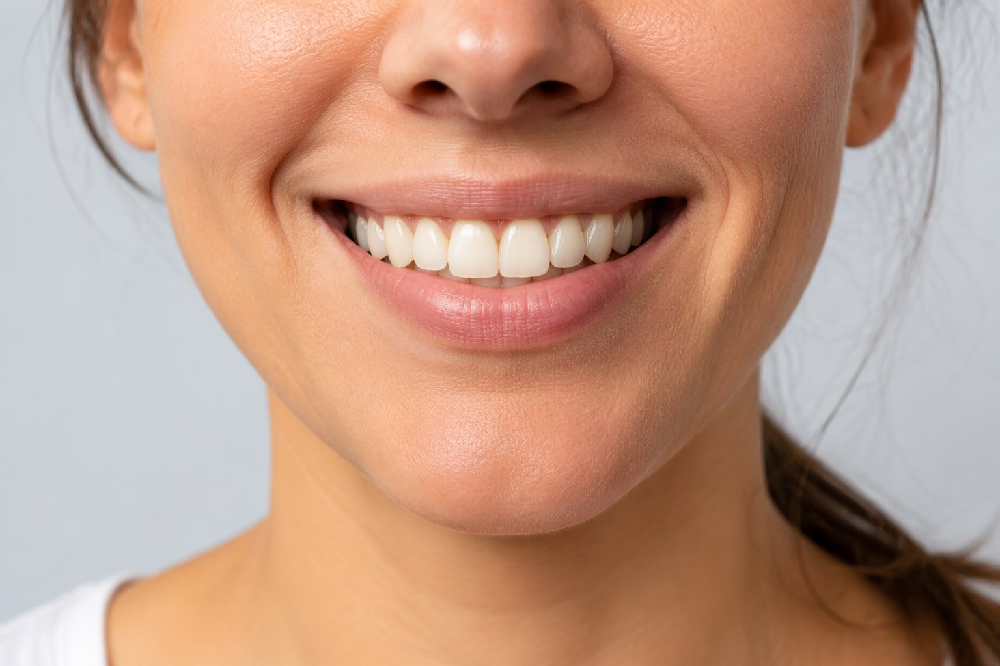
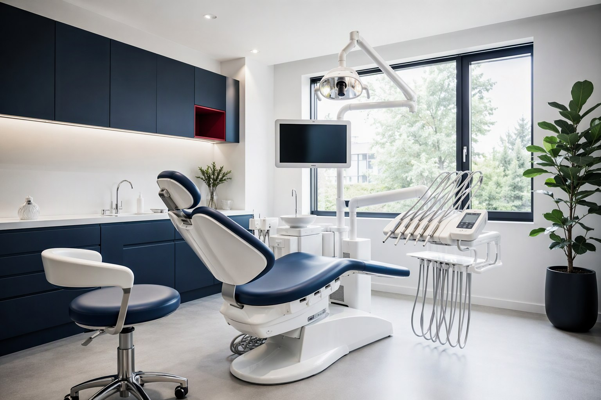
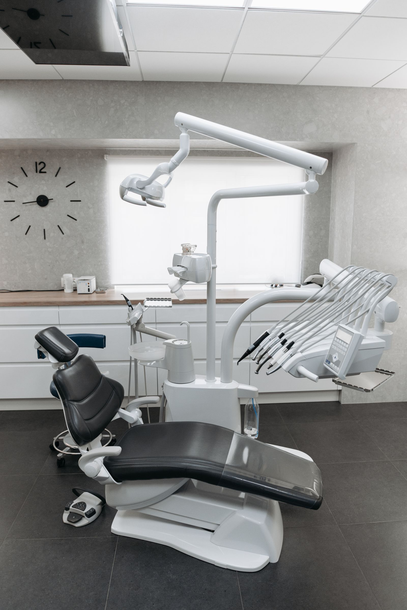
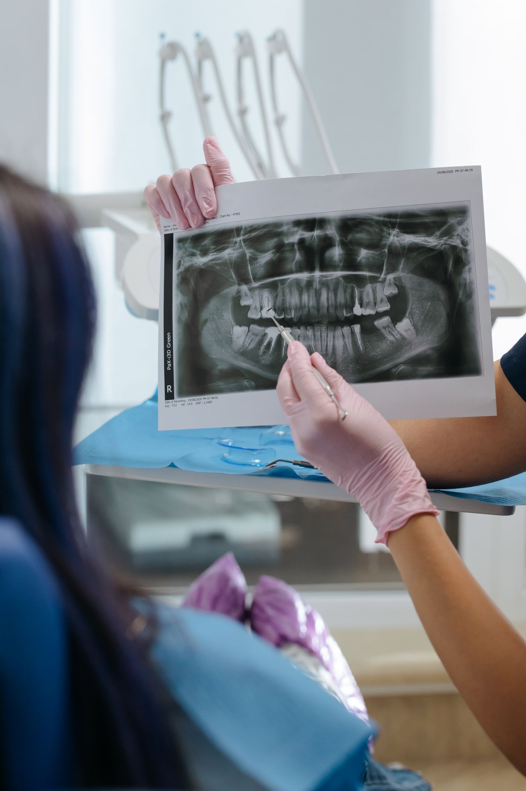

Профессиональная гигиена
Удаление налёта и камня, полировка и рекомендации по домашнему уходу.
от 6 500 ₽*
Стоматология для всей семьи
После диагностики вы увидите варианты лечения, стоимость каждого этапа и сможете выбрать, с чего начать.
После нажатия откроется форма демо-записи. Условия акции и рассрочки для реальной клиники нужно подтвердить.

ДоПослеЭстетическая стоматология
Передвиньте ползунок и посмотрите, как на сайте может работать сравнение оттенка зубов. Реальные возможности отбеливания врач определяет после осмотра.
Визуальный эффект для макета, а не фотография результата лечения.Стоматология в Екатеринбурге · демо
Выберите направление — форма ниже подставит его автоматически. Объём лечения врач определяет после диагностики.
Удаление налёта и камня, полировка и рекомендации по домашнему уходу.
Диагностика и лечение кариеса с понятным планом восстановления зуба.
Оценка костной ткани, обсуждение этапов и восстановление отсутствующего зуба.
Знакомство с кабинетом, профилактический осмотр и лечение по показаниям.
Консультация по прикусу, брекетам и элайнерам после необходимой диагностики.
Отбеливание и реставрация с учётом исходного состояния зубов и дёсен.
* Цены приведены для демонстрации макета и не являются прайсом действующей клиники.
Наш подход к бюджету
После осмотра врач показывает, что требует внимания сейчас, а что можно распределить по этапам. Это интерактивный пример, а не медицинский план.
Сценарий 01 · первый этап
Врач определяет приоритетную зону и отделяет срочное лечение от процедур, которые можно запланировать позже.
Срок, первый взнос, партнёр и ограничения должны быть подтверждены клиникой и видны пациенту заранее.
Технологии и забота
Покажите пациенту не просто красивый кабинет, а как техника помогает врачу увидеть проблему, объяснить лечение и спланировать этапы.

Техника на стороне точного плана
Фото для макета · PexelsО клинике
В макете показано, как клиника может объяснить пациенту каждый этап — от диагностики до согласования стоимости.
Записаться на консультациюДля рабочей версии — понятное описание обработки инструментов и контроля.
Что используется в лечении и как выбор материала влияет на смету.
Показываем проблемную зону и обсуждаем варианты без сложных терминов.
Этапы, стоимость и изменения плана согласовываются до начала процедур.
Можно обсудить темп приёма, перерывы и доступные способы обезболивания.
Исследования назначаются по показаниям, а не по обязательному списку.
Атмосфера клиники
В демо используются стоковые иллюстрации. На сайте настоящей клиники здесь должны быть её кабинеты и оборудование.

Команда
Для реального сайта здесь будут имена, специализации, стаж, фотографии и документы специалистов. Сейчас показана только структура блока.
Направление
Направление
Направление
В рабочей версии — только настоящие отзывы со ссылкой на источник. Мы не заменяем их выдуманными цитатами.
Перед записью
Свою ситуацию можно описать в комментарии к демо-заявке.
Набор вариантов зависит от диагностики и показаний. Если клинически допустимых сценариев меньше, врач объясняет доступный план и его стоимость.
В макете условия демонстрационные. Для реального сайта нужно указать срок, первый взнос, партнёра, отсутствие комиссии и переплаты, а также ограничения.
Сценарий макета предполагает, что после осмотра пациент получает план и смету. Объём и стоимость лечения согласовываются до процедур.
Набор исследований зависит от клинической ситуации и показаний. Врач должен объяснить, зачем нужно каждое исследование.
Нет. Заявка сохраняется только в текущем браузере. Для рабочего сайта нужно подключить почту, Telegram или CRM клиники.
Запись на приём
Заполните форму — сайт проверит данные и сохранит демо-заявку в этом браузере. Администратор её не получит.
Запись есть только в этом браузере. Можно скопировать её текст или изменить данные.